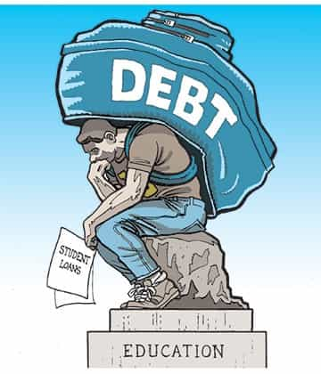

< < < Back
Why Men Should Not Go To College – Return Of Kings
I’ve said it before, I’ll say it again: going to college was one of the biggest mistakes I’ve ever made. I spent four years of my life in the ivory tower and got nothing out of it aside from a piece of paper, five figures worth of debt and some funny stories. What I do for a living now—writing—didn’t require a degree and never has. If I could do things all over again, I’d have skipped college entirely, cashed out my bonds and gone carousing in Brazil or Thailand.
It’s clear that I’m not the only one who thinks this way. For as long as I can remember, the percentage of men enrolled in colleges has dropped every year. Universities across America are becoming giant clam-fests, coffee klatches of sexually frustrated co-eds whining about the quality of men they’re expected to hook up with. Barring some kind of housing crisis-esque meltdown in the student loan market, higher education is only going to get pinker as the years go on.
Good, I say. The day when the last young man decides that doing anything is better than pissing away four years of his life and $50,000 of his money on a sheepskin will be a glorious day indeed. Here is why most men should not go to college.
1. You will learn absolutely nothing
Outside of math and the hard sciences, most college curricula have zero factual basis. I don’t mean necessarily that everything taught in them is a lie, but rather that there is no objective standard on which they are based. In math and hard sciences such as chemistry, for example, claims made by scholars and professors can be independently proven and verified. In the humanities and soft sciences, you can literally come up with any thesis you want and get away with it so long as you sound convincing.
For example, I once wrote a term paper for an English class contrasting Jimmy Stewart’s character in Vertigo with Cary Grant’s in North by Northwest, arguing that Stewart played an effete beta and Grant a dashing alpha male (I’m dead serious; this was shortly after I discovered Roissy, Roosh and other game blogs).
The problem with the humanities and other liberal arts degrees is that without an objective standard, learning is impossible. If the only metric by which students are judged is how accurately they follow the MLA citation guidelines, they will never learn anything. Not only that, it makes academic fraud ridiculously easy. For example, academic ghostwriting—writing other peoples’ college papers for money—is now a huge industry in the U.S., with countless writers earning a living by helping students cheat. If someone who has never even cracked a book on literary criticism can write quality papers for an English class, it means English degrees are worth less than toilet paper.

2. You will put yourself in debt for years, if not decades
Unless your parents are rich or you’ve gotten some quality scholarships, you’re going to have to finance your education by taking out student loans. Thanks to the collapsing economy and the usurious nature of student loans, you’re going to be a debt slave for the better part of your adult life. Because student loans have ridiculous interest rates and cannot be discharged in bankruptcy, they will be an albatross around your neck, keeping you from marrying, having children, buying a house or doing anything worthwhile in life. Even if you luck out and end up with a decent job, your student loan payments will combine with your other expenses to keep you on the hamster wheel for years.
Aaron Clarey said it already in his brilliant book Worthless, but it bears repeating: it’s absolutely insane that we allow 16 and 17-year-olds to make these kinds of decisions. We don’t let them smoke, vote, or drink, yet we allow them to shackle themselves in the chains of debt slavery by letting them major in useless subjects. And when they end up slinging lattes at Starbucks, we scratch our heads and wonder “Hurr durr, how did THIS happen?”
3. You will be denigrated every day—and potentially arrested—for being a man
Imagine a black man who willingly puts himself in an environment where he’s called the n-word every day and told he’s an inferior, evil person because of the color of his skin. You’d think he was insane, right? Yet men are still choosing to attend universities where their Marxist, leftist, feminist professors preach hatred against men in general and straight white men in particular. To be a man in college is to be blamed for everything that’s wrong with the world, from poverty to colonialism to environmental degradation. If I wanted to be picked on, I’d go see an insult comic.
You might think that being castigated for your Y chromosome is no big deal, but the rabid anti-male hatred on campuses is starting to have real-world effects. Consider that California’s new “Yes Means Yes” sexual assault law effectively makes every sexually active man enrolled in the state’s universities into a criminal. As attorney Mike Cernovich points out, the arbitrary and poorly-defined concept of “affirmative consent” means that any man can now potentially find himself behind bars for “rape.” With New York Governor Andrew Cuomo recently forcing a version of “Yes Means Yes” on SUNY schools, maleness itself is rapidly becoming illegal on college campuses across the nation.
Not only that, but while your professors and administrators assert themselves as infallible moral authorities, they’re engaging in degeneracy on a level that would make Caligula blush. Beyond professors tearing up political signs they disagree with and helping fabricate “hate crimes,” both they and administrators are complicit in wide-scale academic fraud.
For example, most professors and administrators are well aware that many of their students are going to degree mills and passing in work that is not theirs. They do nothing because if they actually started expelling students for plagiarism (like the college syllabus says they’re supposed to), that would mean fewer tuition dollars for the school and no money to pay their bloated salaries. If you’re too much of a wuss for war, education is a pretty damn good racket.
The only reason to go to college if you have the talent and drive to major in a high-earning, math-centric degree such as computer engineering. Anything else is a waste of your time and money. But what do you do with your life if you aren’t STEM-oriented? Here are some suggestions.
1. Learn a trade
Electricians, plumbers and other tradesmen are among the highest earners in the U.S., pulling down five- and six-figure salaries with only a few years’ certification and experience. The cost of breaking into a trade is minimal as well, as you will typically be paid while you’re apprenticed. Additionally, the trades are still a masculine field: you won’t have to worry about politically correct HR commissars getting you fired for not toeing the leftist line. Finally, you will have job security, as no matter what happens to the economy, people will still need their electrical grids maintained and their water pipes working.
Despite this, men are reluctant to enter the trades because decades of liberal propaganda have made blue-collar jobs “uncool” and “low-class.” My friend Dr. Illusion tells me that his company is absolutely screaming for new hires. The lack of new tradesmen has helped to push salaries up, meaning that if you’re looking for a career in the trades, there’s no better time than now.
2. Go to the Bakken oil fields
While the Bakken oil fields in North Dakota and Montana are no longer as active as they once were, enterprising men can still make bank there if they network well. No experience necessary. Halliburton, Select Energy and other oil companies are constantly looking for men to work on their hydrofracking rigs, with annual pay reaching into the six figures for some roughnecks. Even “menial” jobs in Williston, North Dakota and other oil towns pay well due to the region’s labor shortage. For example, when I lived in Williston two years ago, even Wal-Mart was paying $21 an hour.
3. Just do it
If you have lofty dreams of being an artist or businessman, you don’t need a degree to achieve them. If you want to be a musician, forget about auditioning for Berklee and just take guitar lessons from the music shop in your town. If you want to be a writer, go score some mushrooms from the hippie down the street and take a trip (or do something else equally memorable). If you want to start a business, save up your pennies and just do it. Take advice from a guy like Robert Koch, who dropped out of college and began making money online, and is now living in Peru.
Avoiding college isn’t merely a smart financial decision, it’s one that may save your life. With hysteria about “date rape” reaching Red Scare-esque proportions, to be a man in an American university is to have a target on your head. Save your money and choose another path instead. While your “enlightened” feminist, you-go-grrl peers are stuck paying off their student loans on a minimum wage salary, you can be living the life of your dreams.
Read More: How To Get A Good Education Without Going To College